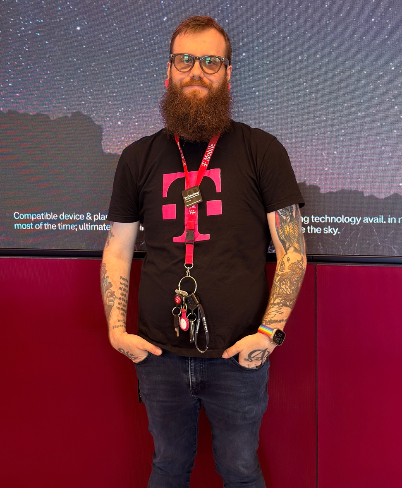

People grow when they feel believed in.
I choose to be the leader who believes first.
7+ Years at T-Mobile · Experience Associate Manager · Columbus, OH
Get in touch
My approach to leadership starts long before any metric is touched. I listen first, for the person beneath the performance, the story inside the effort, the potential that hasn't yet been spoken out loud. Confidence isn't something you tell people to have. It's something you help them build, one conversation and one moment of belief at a time.
People grow best in environments where they feel safe to try, safe to fail, and safe to be exactly who they are. My work is to build that environment, and to hold belief in someone long enough for them to learn to hold it themselves.
Every team has a story already in progress. I take time to understand it before trying to change it.
Clear expectations aren't harsh, they're a gift. People perform best when they know exactly what success looks like.
Skills can be trained. Confidence has to be built. I invest in both, because both show up in the customer interaction.
Numbers follow energy. When a team believes in themselves and each other, the metrics take care of themselves.
During my time as Retail Store Manager at T-Mobile, one of the people I worked with, Sydney, came in as a Mobile Expert. She had potential that was easy to see from the outside, but she didn't always see it in herself.
We worked on confidence in small moments, clarity in communication, and stepping into leadership in ways that felt meaningful rather than forced.
Today, Sydney is a Retail Store Manager. That progression didn't happen because I pushed her into a role, it happened because we built the belief that she was ready for it. Leadership, to me, is that walk. Staying close enough to catch someone when they stumble, and stepping back far enough to let them find their footing.
Across two store locations in Lima and Wapakoneta, Ohio and a district-wide coaching role, these results came from one consistent investment: rebuilding what teams believed was possible for themselves. When the energy shifted, the numbers followed. We didn't chase metrics, we built the kind of culture where hitting them became inevitable.
I don't arrive with a playbook already written. The first month is about earning the right to lead by listening, establishing trust, and building a foundation the team actually owns.
Listen, observe, and connect. Understand the team's story before trying to change it.
Establish clear expectations and accountability structures. Clarity is where trust begins.
Build skill and confidence through real-time coaching. Practice in the moments that matter.
Drive culture, celebrate early wins, and build toward shared goals the team believes in.
Every role I've held has been at T-Mobile, and every promotion has come from the same place: building trust with people, then building performance with teams. I know the floor, the coaching conversation, the store launch, and the district challenge because I've lived each of them.
Leading daily retail operations, team performance execution, and in-store customer experience.
Led up to 20 direct reports. Grew market share from 7% to 18%. Built district-wide escalation workflow. Coached multiple team members into management roles.
Supported frontline performance coaching, scheduling, and operational execution.
Consistently exceeded sales goals. Selected for the management development track in 2021.
I'm looking to work in places where growth is shared, where leadership is rooted in care and accountability, and where building people is treated as seriously as building revenue. If that's the kind of team you're building, I'd love to be part of the conversation.